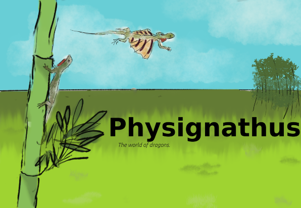
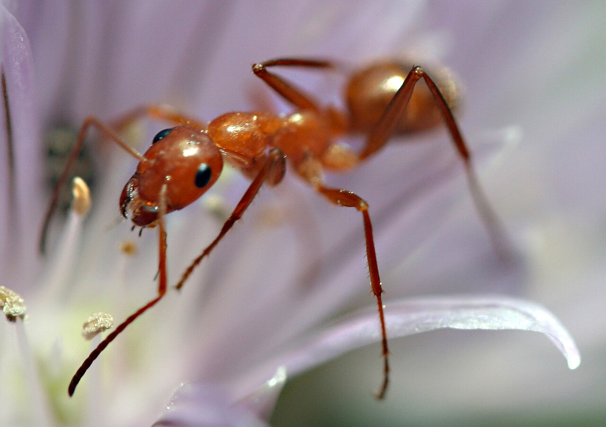
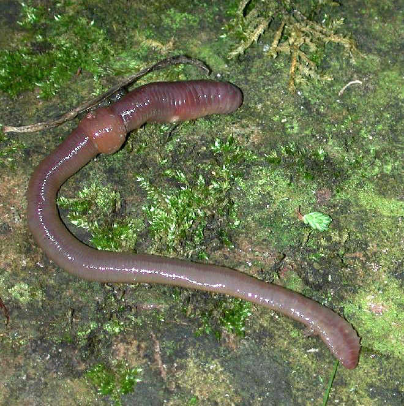
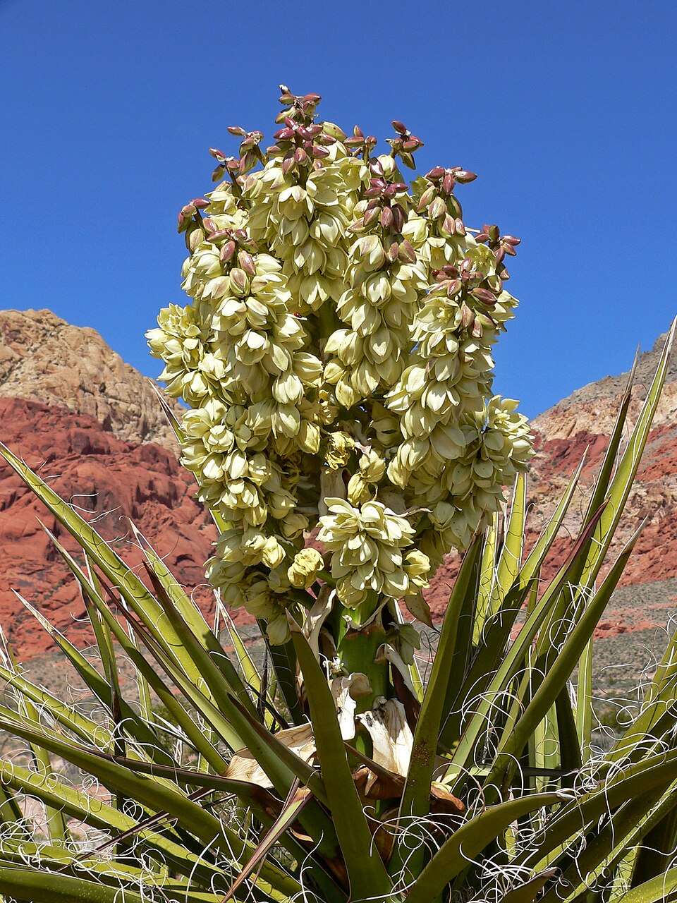
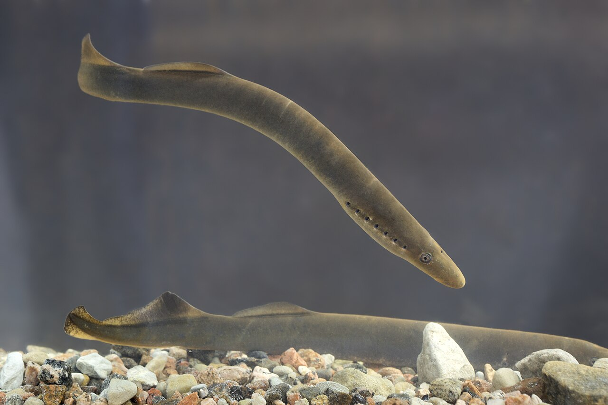

Imagine, if you will, what would happen if you placed a type of lizard from Earth on a lush planet without predators and leave them for millions of years. Whereas Earth's life arose naturally this planet, named physignathus, would have derived organisms from our planet seeded as a sort of cosmic experiment. Having a head start for evolution to take place, separate from all other species back at home. Isolated on Pysignathus until their descendants are so far removed that they are unrecognisable.
But before we begin you need to know what species Physignathus started out with. Over a long timeline of thousands of years increasingly complex life was placed. And with each level of complexity fewer species were fitted. Thousands of plants, hundreds of insects, ten vertebrates only three of them on land. These three are the dragons which we are going to follow for millions of years: the draco lizard Draco volans, the greenwater dragon Physignathus cocincinus, and finally the bearded dragon Pogona vitticeps. These three are in turn fed by the plentiful invertebrates which are as follows:
(excluding nemotodes and prokaryotes)

Locusts, al of genus Schistocerca and Chortoicetes

These then in turn eat the even more plentiful plants as follows:

And finally we cannot forget the fish which were seeded:

Now that you know which flora and fauna have been seeded on this lush planet isolated from all other life. We may finally begin our journey through time and see what will evolve.